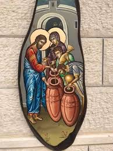

በደብረ መድኃኒት መድኃኔዓለም ቤተክርስቲያን በባህረጥበብ ሰንበት ትምህርት ቤት የሚገለገሉ የተለያዩ አገልግሎቶች አሉ። እነሱም
የመድኃኔዓለም አገልግሎት
የመድኃኔዓለም በዓል በደብራችን በዓመት 2 ጊዜ ይከበራል።
ጥቅምት 27
የኢ/ኦ/ተ/ቤ/ክ ጥቅምት ፳፯ የመድኃኔዓለምን ዓመታዊ ክብረ በዓል በመሆኑ በደማቁ ታከብራለች፤ ይህም የለውጥ በዓል ነው፤ ጌታችን መድኃኒታችን ኢየሱስ ክርስቶስ ደሙን ያፈሰሰው ሥጋውን የቆረሰው አንዴ ብቻ ነው፤ እርሱም መጋቢት 27 ቀን፤ ይህ ግን በአብይ ጾም ስለሚውል በአብይ ጾም ሀዘን እንጂ ደስታ ስለሌለ በዓል ማክበርም ስለማይፈቀድ፤ ወደ ጥቅምት 27 ተዛውሮ ደስ ብሎን ከድሆች ጋር እንድናከብረው ቤተክርስቲያን ስርዓት ሰርታለች። ዳግመኛ በዛሬዋ ቀን በዚህች ቀን ኢትዮጵያዊው ጻድቅ አቡነ መብዓጽዮን የእረፍት ቀናቸው ነው፤ ትውልዳቸው ሸዋ ትጉለት ውስጥ ነው እመቤታችን ያወጣችላቸው ስም ተክለ ማርያም ነው፤ እኚህ ጻድቅ በጣም የሚታወቁበት ተጋድሎ አላቸው፤ ይህም አርብ አርብ ቀን የጌታችንን ሞቱን ለማሰብ ትልቅ ድንጋይ በጀርባቸው አዝለው እልፍ እልፍ እየሰገዱ ማታ ላይ ኮሶ ይጠጡ ነበር፤ ሀሞት መጠጣቱን ለማሰብ፤ ከጽድቃቸው ብዛት የተነሳ መቋሚያቸውን ቢተክሉት ሎሚና ትርንጎ አፈርቷል፤ጻደቁ የእረፍት ቀናቸው ሲደርስ ጌታችን ተገልጾ በርካታ ቃለ ኪዳን ገብቶላቸዋል፤ የእረፍታቸውን ቀን በእረፍት ቀኑ አድርጎላቸዋል። አቡነ መብዓጽዮን በ15ኛው መቶክፍለ ዘመን ልጅ በማጣታችው በጾምና በፀሎት ፈጣሪአቸውን ከሚለምኑ ባልና ሚስት ተወለዱ። ጌታዬ ኢየሱስ ክርስቶስ ሆይ የዕለተ ዓርቡን መከራህን አሳየኝ ስለራሴ ፈጽሞ አለቅስ ዘንድ ብለው በጸለዩ ጊዜ መከራ መስቀሉን ለማየት ትፈቅዳለህን? ብሎ ጠየቃቸው። ጻድቁ አባ መባዓጽዮንም አዎ አይ ዘንድ እወዳለሁ ሲሉ ለጌታቸው መለሱለት። ያን ግዜም የጌታችን የኢየሱስ ክርስቶስ ዕጸ መስቀል ላይም እጆቹና አወግሮቹ ተቸንክረውና ተዘርግተው ታዩ በራሱ ላይም የእሾህ አክሊል ደፍቶ ነበር።እንዲህ ሆኖ በሮም አደባባይ ለቅዱስ ጴጥሮስ እንደታየው ታያቸው። የጌታን ሕማማተ መስቀል እያሰቡ ዘወትር ስለሚያነቡ ዓይኖቻቸው ጠፍተው ነበር።ነገር ግን እመብዙሀን የሆነችው ቅድስት ድንግል ማርያም ወደኝህ ጻድቅ አባት በዓት የብረሃን ጽዋዕ ይዛ መጥታ ዓይኖቻቸውን ቀብታ አድናቸዋለች።ከዚህ የተነሳ በትረ ማርያም እየተባሉ ይጠሩ ነበር። የጻድቁ መታሰብያ በዓል በየዓመቱ ጥቅምት 27 ቀን እና ከመድኃኔዓለም የስቅለት በዓል ጋር ይከበራል። ጥቅምት 27 ቀን ለወዳጆቹ እውነተኛውን ዋጋ የሚከፍል መድኃኔዓለም ክርስቶስ ለጻድቁ መብዓጽዮን ብዙ ቃል ኪዳን የገባበት ቀን ነው።
መጋቢት 27
በዚህ ቀን መጋቢት 27 ጌታችን መድኃኒታችን ኢየሱስ ክርስቶስ የሰውን ልጅ ከወደቀበት የኃጢያት አዘቅት ሊያወጣው ከሰማየ ሰማያት ወርዶ ከቅድስት ድንግል ማርያም ስጋን ነስቶ ሳይገባው በበረት ተወልዶ፤ ስደታችንን ሊያስቀር ሳይገባው ተሰዶ፤ በክፉዎች አይሁድ ምክር ተከሶ በባህርይው መንገላታት የማይገባው አምላክ ለኛ ሲል የተንገላታና የተደበደበ፣ በጥፊ የተመታ፣ የተዘባበቱበት፣ ምራቅ የተተፋበት፣ እርጥብ መስቀል ተሸክሞ ከሄሮድስ ወደ ጲላጦስ እየተመላለሰ ከዚያም በቀራንዮ የራስ ቅል በምትባል ሥፍራ ተሰቅሎ ለኛ ሲል ሞታችንን በሞቱ ሽሮ በዋጋ ገዝቶናል። (ማቴ. 27፥1፣ ማር.15 ፥1፣ ሉቃ. 23፥1፣ ዮሐ.19፥ 1)
የመድኃኔዓለም አገልግሎት በአብዛኛው በሁለቱም በማዕከላውያን ክፍል እና በወጣት ክፍል ይሸፈናል።
የመድኅኔዓለም አገልግሎት ፎቶዎች
የቅዱስ ገብርኤል አገልግሎት
የቅዱስ ገብርኤል በዓል በደብራችን በዓመት 2 ጊዜ ይከበራል።
ታህሳስ 19
በየዓመቱ በዚህ እለት ቅዱስ ገብርኤል ሠለስቱ ደቂቅን ከእሳት እንዳወጣቸው እናስብበታለን። አባቶቻችን እንዳስተማሩን፣ ከመጽሃፍም እንደተረዳነው ታሪኩ እንዲህ ነው። በዚህች ቀን ንጉሡ ናቡከደነፆር የወርቁን ምስል አሠራ፤ በባቢሎንም አውራጃ በዱራ ሜዳ አቆመው ። ለወርቁ ምስል ሁሉም እንዲሰግድ እንዲንበረከክ አዘዘ ሁሉም ሰገደ ተንበረከከ ከእነዚህ ሦስት የልዑል እግዚያብሔር ብላቴናዎች (ሲድራቅ ሚሳቅና አብደናጎም) በቀር ፤ ናቡከደነፆርም በብስጭትና በቍጣ ሦስቱን ብላቴናዎች ያመጧቸው ዘንድ አዘዘ ወደ ንጉሡ ፊት አመጡአቸው። አምላኬን አለማምለካችሁ፥ ላቆምሁትም ለወርቁ ምስል አለመስገዳችሁ እውነት ነውን? እንግዲውስ በሚነድድ እሳት እቶን ውስጥ ትጣላላችሁ፤ ከእጄ የሚያድናችሁ አምላክ ማን ነው? ብሎ ተናገራቸው። ሲድራቅና ሚሳቅ አብደናጎም እንዲህ ሲሉ መለሱለት ንጉስ ሆይ፥ በዚህ ነገር እንመልስልህ ዘንድ አስፈላጊያችን አይደለም የምናመልከው አምላካችን ከሚነድደው ከእሳቱ እቶን ያድነን ዘንድ ይችላል፤ ደግሞም ያድነናል! ነገር ግን፥ ንጉሥ ሆይ፥ እርሱ ባያድነን እንኳን አማልክትህን እንደናመልክ ላቆምኸውም ለወርቁ ምስል እንደማንሰግድ እወቅ አሉት። የዚያን ጊዜም ናቡከደነፆር በሲድራቅና በሚሳቅ በአብደናጎም ላይ ቍጣ ሞላበት፥ የፊቱም መልክ ተለወጠባቸው፤ እርሱም ተናገረ፥ የእቶንም እሳት ይነድድ ከነበረው ይልቅ ሰባት እጥፍ አድርገው እንዲያነድዱት እና እሳቱ ይጥሉአቸው ዘንድ አዘዘ፤ የዚያን ጊዜም እነዚህ ብላቴናዎች ከነልብሳቸው ከነመጐናጸፊያቸው ታስረው እሳት ውስጥ ተጣሉ። ናቡከደነፆር አሟሟታቸውን ሊመለከት ቆመ ወደ እሳቱም ተመለከተ አራት ሰዎችም በእሳት ውስጥ ሲመላለሱ አየ ተደነቀ ፈጥኖም ተነሣ፤ አማካሪዎቹንም። ሦስት ሰዎች አስረን በእሳት ውስጥ ጥለን አልነበረምን? ብሎ ተናገራቸው። እነርሱም። ንጉሥ ሆይ፥ እውነት ነው ብለው መለሱለት።እርሱም። እነሆ፥ እኔ የተፈቱ በእሳቱም መካከል የሚመላለሱ አራት ሰዎች አያለሁ፤ ምንም አላቈሰላቸውም፤ የአራተኛውም መልክ የአማልክትን ልጅ ይመስላል ብሎ መለሰ። ይህም ታላቁ መልአክ ቅዱስ ገብርኤል ነው፡ ናቡከደነፆር ድምጹን ከፍ አድርጎ ከእሳቱ እንዲወጡ ተጣራ የራሳቸው ጸጉር አልተቃጠለም ልብሳቸውም እንዲሁ ናቡከደነፆር ከዚህ በኃላ እንዲህ ሲል እግዚያብሔርን አመሰገነ “በእርሱ የታመኑትን ባሪያዎቹን ያዳነ፥ የሲድራቅና የሚሳቅ የአብደናጎም አምላክ ይባረክ” (ትንቢተ ዳንኤል 3 ፥ 1-30)
ሐምሌ 19
ሐምሌ 19 ዕለት የመላእክት አለቃ ቅዱስ ገብርኤል አምላካቸው ክርስቶስን አንክድም በማለታቸው የፈላ ጋን ውስጥ የተወረወሩት ቅዱስ ቂርቆስና እናቱን ቅድስት ኢየሉጣ ተራድቶ ያዳነበት በዓል ነው። ይኸውም የቅድስት ኢየሉጣን ልጅ ሕፃኑ ቅዱስ ቂርቆስ ከሐዲው መኰንኑ ይዞ “ስምኽ ማነው” ብሎ በጠየቀው ጊዜ “ነቅዕ ዘእምዐዘቅት ንጹሕ ወእማይ ዘኢይማስን ክርስቲያን ስምየ” (ከንጹሕ ዐዘቅትና ከማይለወጥ ከማይጠፋ ውሃ የተገኘ ስሜ ክርስቲያን ነው ሞክሼ ስም ከፈለግኽ ደግሞ እናቴ የሠየመችኝ ቂርቆስ ነው) በማለት ክርስትናው መመኪያው የኾነው ይኽ ቅዱስ ሕፃን መለሰለት፡፡ መኰንኑም ለአማልክት ከሠዋኽ ስታድግ እሾምኻለኊ ክርስቶስን ካድ ቢለው ቅዱስ ቂርቆስ ግን “የሰይጣን መልእክተኛ ለእውነትም ጠላቷ የኾንኽ ከእኔ ራቅ” አለው፡፡ መኰንኑም ይኽነን ሰምቶ በመቈጣት የቅዱስ ቂርቆስ ደሙ እንደ ውሃ እስኪፈስስ ድረስ እንዲጨምቁት እና ጨውና ሰናፍጭ በኹለቱ የአፍንጮቹ ቀዳዳዎች እንዲጨመሩ ቢያደርግበት፤ በመንፈስ ቅዱስ ጸጋ የጠነከረው ሕፃኑ ቅዱስ ቂርቆስ ግን “ትእዛዝኽ ለጒረሮዬ ጣፋጭ ኾነ ከማርና ከሥኳርም ለአፌ ጣመኝ” እያለ አምላኩ ክርስቶስን አመሰገነ፡፡ መኰንኑ በዚኽ ሳያበቃ እናትና ልጇ በክፉ አሟሟት እንዲሞቱ በማሰብ የረዘሙና የተሳሉ በእሳትም እንደ ፍም የጋሉ ዐሥራ አራት የብረት ችንካሮች እንዲመጡ አስደርጎ ሰባቱ በእናቱ አካላት፤ ሰባቱ በሕፃኑ ሰውነት ላይ እንዲሰካ ቢያስደርግም በጌታችን ትእዛዝ ግለቱ ጠፍቶ እንደ በረዶ በመቀዝቀዝ ምንም ምን ጒዳት ሳያደርስባቸው ቀረ፡፡ ከዚያም ወደ ወኅኒ ቤት እንዲገቡና እንዲዘጋባቸው አደረገ፤ ከዚያም ሕፃኑና እናቱ የሚሠቃዩበት ታላቅ መንኰራኲር ለ፵ ቀናት ተሠርቶ ካለቀ በኋላ ኹለቱንም በደራቁ ራሳቸውን ላጭተው የእሳት ፍሕምን በላያቸው ላይ ቢያደርጉም የእግዚአብሔር መልአክ ሥቃዮቹን ኹሉ ከእነርሱ አራቀላቸው፡፡ የሕፃኑ ምላስ እንዲቈረጥ አዝዞ ቢያስቈርጠውም ጌታችን ምላሱን መልሶለታል፡፡ “ወአዘዘ ካዕበ ያፍልሑ ማየ ውስተ ጽሕርት ዐቢይ ወይደይዎሙ ለሕፃን ቂርቆስ ወለእሙ ኢየሉጣ” ይላል በታላቅ ጋን ውሃ አፍልተው ሕፃኑንና እናቱን እንዲጨምሯቸው ሲያዝዝ ከሚፍለቀለቀው ውሃ ድምፅ የተነሣ ለጊዜው እናቱ ፍርሀት ሥጋዊ ቢያገኛትም ልጇም ወደ ጌታችን በጸለየላት ጊዜ ፍርሃቱ ርቆላት ከልጇ ጋር ስትገባ መልአከ ብርሃን ቅዱስ ገብርኤል ወርዶ ውሃውን አቀዝቅዞ ሐምሌ ፲፱ አውጥቷቸዋል፡፡በመጨረሻም የሰማዕትነትን አክሊል የሚያገኝባት ጊዜ ሲደርስ ጌታችን ተገልጾለት ስሙን ለሚጠራ ኹሉ ቃል ኪዳንን ከሰጠው በኋላ ሥጋኽን በኤልያስ ሠረገላ ላይ አኖርልኻለኊ አለው፤ ይኽነን በሰማ ጊዜ በእጅጉ ተደሰተ፤ ከዚኽም በኋላ ጥር ፲፭ በሌሊቱ እኲሌታ ከእናቱ ጋር አንገቱ ተቈረጠ የሰማዕትነትን ክብር ተቀዳጅተዋል። ጥር ፲፮ ደግሞ የቅዱስ ቂርቆስ ማኅበር የኾኑ ዐሥራ አንድ ሺሕ አራት በሰማዕትነት ዐልፈዋል፡፡
የቅዱስ ገብርኤል አገልግሎት በአብዛኛው በማዕከላውያን ክፍል ይሸፈናል። አንደንድ ጊዜ ግን ወጣት ክፍልም ሊካተት ይችላል።
የቅዱስ ገብርኤል አገልግሎት ፎቶዎች
የአቡነ ተክለሐይማኖት አገልግሎት
የአባታችን አቡነ ተክለሐይማኖት በዓል በደብራችን በዓመት 2 ጊዜ ይከበራል።
ታህሳስ 24
ታህሳስ 24 በዚህች ቀን ታላቁ ጻድቅ አቡነ ተክልሃይማኖት የተወለዱበት ቀን ነው።ተክለሃይማኖት ማለት "የሃይማኖት ተክል፣ ተክለአብ ተክለወልድ ተክለመንፈስቅዱስ" ማለት ነው፡፡ የትውልድ ቦታቸው ሸዋ ጽላልሽ አወራጃ ዞረሬ ነው፤ የአባታቸው ስም ጸጋ ዘአብ የእናታቸው ስም እግዚሐርያ ይባላል። መካን ነበሩ ልጅ እንዲሰጣቸው ወደ እግዚአብሔር ዘወትር ይጸልዩ ነበር፤ መጋቢት 12 ቀን እንዲህ ሆነ፤ ሞተሎሜ የተባለ ጣኦት አምላኪ ንጉስ አገራቸውን ወረረ መንደሩንም አጠፋ ጸጋዘአብ ወንዝ ውስጥ ገብቶ አመለጠ እግዚሐርያ ግን ተማርካ ሄደች፤ በጣም መልከ መልካም ስለነበረች ሞቶሎሜ ሊያገባት አሰበ ታላቅ ድግስም ደገሰ አገር ምድሩ ተሰብስቦ ሲዘፍን ሲጨፍር ሳለ ቅዱስ ሚካኤል ታላቅ መብረቅ ነጎድጓድ አሰማ ብዙዎች ሞቱ እግዚሐርያን በክንፎቹ ተሸክሞ ዞረሬ ከቤተክርስቲያን ውስጥ አስቀመጣት። ከባለቤቷ ጸጋዘአብጋር ተገናኙ ተቃቅፈው ተላቀሱ፤ከሁለት ቀን በኃላ መጋቢት 24 ቀን አቡነ ተክለሐይማኖት ተጸነሱ በታህሳስ 24 ቀንም በ1167 ዓ/ም ተወለዱ፤ ቀኑ አርብ ነበር። በተወለዱ በ3ኛ ቀናቸው እሁድ በ 3 ሰዓት “አሐዱ አብ ቅዱስ አሐዱ ወልድ ቅዱስ አሐዱ ውእቱ መንፈስ ቅዱስ” ብለው ስላሴን አመሰገኑ። አባታችን የአንድ ዓመት ከመንፈቅ ህጻን እያሉ በድፍን ሸዋ ርሃብ ተከስቶ ነበር በተለይም በዞረሬ። እግዚሐርያ አዘነች አለቀሰች ምነው እርቧት ነው ጠምቷት ነው ቢሉ የለም እርቧትስ ጠምቷትስ አይደለም የቅዱስ ሚካኤል ዝክሩ ታጎለብኝ ብላ እንጂ፤ ህጻኑ ተክለሐይማኖት ከእናቱ ጭን ወርዶ እየዳኸ ወደ ጓዳ ሄደ አንስታ አቀፈችው እርሱ ግን አለቀሰ ዱቄት የተቀመጠበትን እንቅብ እንድትሰጠው በእጁ ጠቆማት ሊጫወትበት መስሏት ሰጠችው በትንንሽ እጆቹ እንቅቡ ላይ አማተበ ዱቄቱ ሞልቱ ፈሰሰ ዳግመኛ የቅቤ የዘይት ማስቀመጫ ማድጋዎች ላይ በተመሳሳይ አማተበ ሞልቶ ፈሰሰ ቤቱ በበረከት ተትረፈረፈ፤ የቅዱስ ሚካኤልን ዝክሩን አዘከረች አገሬውን ጠርታ መገበች፤ ለተቸገሩትም አብዝታ ሰጠች፤ ይህ በረከት ሁለቱም እስኪሞቱ ድረስ አላለቀም ይላል ገድላቸው። አባታችን አቡነ ተክለሐይማኖት 99 ዓመት ከ 10 ወር ከ 10 ቀን በዚህ ምድር ኖረው ነሐሴ 24 ቀን አርፈዋል።
ነሐሴ 24
በዚህች እለት አባታችን አቡነ ተክለሐይማኖት ያረፉበትን በዓል እናስብበታለን። ቅዱስ አባታችን በሞት ከማረፋቸው በፊት አስቀድሞ ጌታችን እንደነገራቸው ሥጋቸው ከነፍሳቸው ከተለየች ከ57 ዓመት በኋላ የካቲት 19 በጸሎት ላይ ለነበሩት ለአቡነ ሕዝቅያስ ተገልጠውላቸው ‹‹ጌታ የገባልኝን ቃል ይፈጸም ዘንድ ሥጋዬ የሚፈልስበት ደረሰ፣ ቀኒቱንም በምስጋናና በጸሎት መንፈሳዊ በዓል አድርጉ፤ እኔ ኃጥኡ በሞትኩበት ቀን እንደነበረው ምስጋና አቅርቡ፡፡ ሄደህ ለ12 መምህራንና ለልጆቼ ግንቦት 12 እንዲያከብሩ ንገራቸው፡፡ በፍልሰቴ ቀን አባቴ አባቴ የሚለኝ ሁሉ ይምጣ ያኔ እኔ፣ ወዳጄ ሚካኤልና ልጄ ፊልጶስ አብረን መጥተን እንባርካለን፡፡ ምልክት ይሆንህም ዘንድ በምመጣበት ጊዜ የጠፋው የመቅረዙ መብራት ይበራል›› አሉት፡፡ ከዚህም በኋላ አቡነ ሕዝቅያስ በአባታችን ተባርከው ሄደው በአራቱም አቅጣጫ ላሉት 12 መምህራንና ለክርስትያኖች ሁሉ አባታችን የነገሩትን የፍልሰታቸው በዓል ስለማድረግ ወደ ፍልሰቱ በዓል ያልመጣም በዚያች ቀን (በሰማይ ለምልጃ) አባቴ እንዳይለው እርሱም ልጄ እንዳይለው ጨምሮ መልእክቱን ላከላቸው፡፡ እነርሱም ከያሉበት ተሰብስበው መጥተው የቅዱስ አባታችንን ሥጋቸውን አውጥተው ወደ ቤተክርስቲያን አፍልሰው 3 ጊዜ መቅደሱን አዙረው በዓሉንም አባታችን እንዳሉት በዝማሬና በምስጋና አክብረው ወደ ውስጥ አስገቡት፡፡ በዚህም ጊዜ ብፁዕ ወቅዱስ አባታችን ተክለ ሃይማኖት አስቀድመው እንደተናገሩት ጠፍቶ የነበረው መብራት ቦግ ብሎ በራ፡፡ ከቅዱስ ሚካኤልና ከልጃቸው ከአቡነ ፊልጶስ ጋር በመሆንም በዓሉን ያከብር የነበረውን የተክለ ሃይማኖት የጸጋ ልጆቻቸውን ሁሉም ይባርኩ ነበር፡፡
የእቡነ ተክለሐይማኖት አገልግሎት በአብዛኛው በወጣት ክፍል ይሸፈናል። አንደንድ ጊዜ ግን ማዕከላውያን ክፍልም ሊካተት ይችላል።
የአቡነ ተክለሐይማኖት አገልግሎት ፎቶዎች
የመስቀል አገልግሎት
የመስቀል በዓል በየዓመቱ መስከረም 16 ደመራ ተደምሮ መስከረም 17 የሚከበር ነው። ጌታችንና መድኃኒታችን ኢየሱስ ክርስቶስ ከሙታን ተለይቶ ከተነሳ በኋላ የተሰቀለበት መስቀል ተአምራትን በማድረጉ የታወኩ አይሁድ መስቀሉን ከሰዎች እይታ ለመሠወር ወሰኑ:: ጉድጓድ ቆፍረው ቀበሩት:: መስቀሉ የተቀበረበትን ቦታ ለ300 ዓመታት ያህል የቆሻሻ መጣያና ማከማቻም አደረጉት:: ምንም እንኳን አይሁድ ለጊዜው መስቀሉን ከዐይን ለመሰወር ቢችሉም ከክርስቲያኖች ልቡና ግን ሊያወጡት አልቻሉም:: የመስቀሉ ብርሃን በልቡናቸው የሚያበራ ክርስቲያኖች እየበዙ መጡ:: መስቀሉንም መፈለግ ጀመሩ::
ንግሥት እሌኒ ልጇን ቆስጠንጢኖስን ከልጅነቱ ጀምሮ ስለ ክርስትና ሃይማኖትና ስለ ክርስቲያኖች መከራ ታስተምረው ስለነበር በክርስቲያኖች ላይ የነበረው አመለካከት በሮም ከነገሡት ቄሣሮች ሁሉ የተሻለ ነበር፡፡ ቆስጠንጢኖስ የሮም ንጉሠ ነገሥት ከሆነ በኋላ በ300 ዓመታት ውስጥ ለመጀመርያ ጊዜ ለክርስቲያኖች የነጻነት ዐዋጅ ዐወጀ፡፡ ክርስትናም ብሔራዊ ሃይማኖት ሆነች፡፡ ንግሥት እሌኒም የተፈጠረውን አመች ሁኔታ በመጠቀም የጌታችንን መስቀል ከተቀበረበት ለማውጣት በ327 ዓ/ም ወደ ኢየሩሳሌም ሔደች፡፡ ንግሥት እሌኒ ልጇ ቆስጠንጢኖስ ክርስቲያን ከሆነላት ወደ ኢየሩሳሌም ሔዳ መስቀሉን ለመፈለግ እንዲሁም በኢየሩሳሌም ያሉ ቅዱሳት መካናትንና አብያተ ክርስቲያናትን ለማሳነፅ ለእግዚአብሔር ተሳለች፡፡ ከዚህ በኋላ ቆስጠንጢኖስ አምኖ በ337 ዓ/ም ተጠመቀ፡፡ ቅድስት እሌኒም ወደ ኢየሩሳሌም ሔደች እንደደረሰችም ስለ ክብረ መስቀል መረመረች ጠየቀች፡፡ ቦታውን የሚያስረዳት ግን አላገኘችም፡፡ አይሁድ የተቀበረበትን ቦታ ለማሳየት ባይፈልጉም በኋላ ባደረገችው ጥረት አረጋዊው ኪራኮስ የጎልጎታን ኮረብታ አመላከታት ዳሩ ግን ኪራኮስ ዘመኑ ከመርዘሙ ጋር ተያይዞ በአካባቢው ከነበሩት ከሦስቱ ተራሮች ውስጥ መስቀሉ የሚገኝበት የትኛው እንደሆነ ለይቶ ማወቅ አልቻለም፡፡ ንግሥት እሌኒ ከሦስቱ ተራሮች የቱ እንደሆነ ለመለየት
በእግዚአብሔር መልአክ እርዳታ ደመራ አስደምራ ብዙ እጣንም በመጨመርና በማቃጠል ጸሎት ተያዘ፡፡ የእጣኑ ጢስ ወደ ሰማይ በመውጣት በቀጥታ ተመልሶ መስቀሉ ባለበት ተራራ ላይ በማረፍና በመስገድ መስቀሉ ያለበትን ትክክለኛ ስፍራ አመለከታት፡፡ ቅዱስ ያሬድም ጢሱ ሰገደ ብሎታል፡፡ ከዚያም መስከረም 16 ቀን ቁፋሮው እንዲጀመር አዘዘች፡፡ ሰባት ወር ያህል ከተቆፈረ በኋላ መጋቢት 10 ቀን ሦስት መስቀሎች በአንድነት ተገኙ፡፡የክብር ባለቤት ጌታችን የተሰቀለበት የትኛው እንደሆነ ለማወቅ ተቸገሩ፡: መስቀሎቹን ወስደው በሞተ ሰው በተራ ቢያስቀምጡ ጌታችን የተሰቀለበትና በዕለተ ዐርብ ተሰቅሎ የዋለበትና በደሙ መፍሰስ የተቀደሰው መሰቀል የሞተውን ሰው በማስነሣት በሠራው ተአምር ሌሎቹ ሁለቱ ታምራት ባለማድረጋቸው የጌታን መስቀል ለይቶ ማወቅ ተችሏል። እሌኒና ክርስቲያኖች ሁሉ ለመስቀሉ ሰገዱለት፡፡ በየሀገሩ ያሉ ክርስትያኖች ሁሉ የመስቀሉን መገኘት በሰሙ ጊዜ መብራት አብርተው ደስታቸውን በመግለጥ ለዓለም እንዲታወቅ አደረጉ፡፡ ንግሥት እሌኒ ለመስቀሉ ቤተ መቅደስ ከሠራችለት ጊዜ ጀምሮ በመስከረም 17 ቀን አሁን በኢትዮጵያ እንደሚከበረው በክርስቲያኖች ዘንድ መስቀል ይከበር ነበር።
የመስቀል በዓል ፎቶዎች
የጥምቀት አገልግሎት
በኢትዮጵያ ኦርቶዶክስ ተዋሕዶ ቤተ ክርስቲያን ከሚከበሩት በዓላት አንዱና ዋናው የጥምቀት በዓል ነው። የጥምቀት በዓል ጌታችንና መድኀኒታችን ኢየሱስ ክርስቶስ በፍጹም ትሕትና ከገሊላ ወደ ዮርዳኖስ ተጉዞ በአገልጋዩ በቅዱስ የሐንስ እጅ የተጠመቀበትን ዕለት የምናስብበት ከጌታችን ዓበይት በዓላት አንዱ ገናና በዓል ነው፡፡ በአፍ መነገሩ፣ በልብ መታሰቡ፣ ምስጋናውም ሁሉ ከፍ ከፍ ይበልና ጌታችንና መድኀኒታችን ኢየሱስ ክርስቶስ ዕለቱን ተፀንሶ ዕለቱን ተወልዶ ማድግና የወደደውን ሁሉ ማድረግ ሲቻለው ፍጹም አምላክ ብቻ ያይደለ ፍጹም ሰውም በመሆኑ ዘመን የማይቆጠርለት እርሱ ከብቻዋ ከኀጢአት በቀር በሰው ሥርዓትና ጠባይዕ ቀስ በቀስ በማደጉ 30 ዓመት ሲሆነው ሊጠመቅ ወደርዳኖስ ወንዝ ሔደ ትብሎ ዘመን ተነገረለት፡፡ ዮርዳኖስ እንደደረሰ ጌታችን ተለይቶ የሚታወቅበት ምልክት ሳይኖረው ቅዱስ ዮሐንስ በመገልጥ አወቀው። ይህንንም ራሱ ሲመሰክር «እኔም አላውቀውም ነበር፥ ዳሩ ግን በውኃ አጠምቅ ዘንድ የላከኝ እርሱ፦ መንፈስ ሲወርድበትና ሲኖርበት የምታየው፥ በመንፈስ ቅዱስ የሚያጠምቅ እርሱ ነው አለኝ» (ዮሐ. ፩፥፴፫) ይላል። ዮሐንስ የንስሐ ጥምቀት በውሃ ያጠምቅ እንደነበረና ልጅነት የሚገኝበት የመንፈስ ቅዱስ ጥምቀትና ምሉዑ የድኅነት ምሥጢር የሚገኘውና የሚታወቀው ግን ከእርሱ በኋላ ከሚመጣው ከክርስቶስ የተነሣ እንደሆነ መስክሯል። ታላቁ ሊቅ ቅዱስ ያሬድም እመቤታችን ቅድስት ድንግል ማርያምን ባመሰገነበት በአንቀጸ–ብርሃን ድርሰቱ የአብን ነገር የነገረን ወልድ ኢየሱስ ክርስቶስ የውልድንም ነገር አጎልቶና አስፍቶ የነገረን አብ እንደሆነ ሲያስረዳ «ልጅህ ጌታችንና መድኀኒታችን ኢየሱስ ክርስቶስ አንተ ብቻ አባቱ እንደሆንክ እርሱም ብቻ ልጅህ እንደሆነ አስተማረን። በሰማይ እናት በምድርም አባት የለውም ብለን እናምናለን። መምጣቱን ካአባቱና ከእውነት መንፈስ ከጰራቅሊጦስ በቀር የሚያውቅ ሳይኖር ከሰማይ ወረደ ብለን እናምናለን» ሲል ተናግሯል። ይህም የጥምቀት መንሠረቱ ነው። አባቱን አብን ሕይወቱን መንፈስ ቅዱስንና እሱን ወልድን ማወቅ እና ማመን ከሌለ በውሃና በመንፈስ ቅዱስ አንዲቱን ጥምቀት መጠመቅና ልጅነትን ማገኘት አይቻልም። ቅዱስ ዮሐንስ በመንፈስ ቅዱስ ተልኮ «እኔስ ለንስሐ በውኃ አጠምቃችኋለሁ፤ ጫማውን እሸ ከም ዘንድ የማይገባኝ ከእኔ በኋላ የሚመጣው ግን ከእኔ ይልቅ ይበረታል፤ እርሱ በመንፈስ ቅዱስ በእሳትም ያጠምቃችኋል» (ማቴ.፫፥፲፩)። እያለ የላቀ ጥቅም የምታሰጠው ጥምቀት ከእርሱ የትገኝ የጌታችንን መምጣት በጉጉት እየጠበቀ፣ ትንቢት እየተናገረ፣ የተጠራለትንና የተመረጠለትን ሥራውን እያከናወነ ሕዝቡን እያዘጋጀ ሳለ አስቀድሞ የተናገረለት ክርስቶስ በሥፍራው ተገኝቶ የጽድቅ ሥራውን ተመለከተከለት ወደደለት። አጥምቀኝ ብሎ ሲጠይቀው እውነተኛ ሥራውን እንደወደደለትና እንዳጸደቀለት ያጠይቃል።
ዛሬ እያንዳንዳችን ወደምንገኝምበት ዮርዳኖስ ጌታችን ቢመጣና ቢጎበኘን በቅዱስ ዮሐንስ ምትክ የተሾመለትን ሥራ፣ የተጠራለትን አገልግሎት በተሰጠው ጸጋ እያከናወነ የሚያገኘው ነቢይ፣ ሐዋርያ፣ ጳጳስ፣ ካህን፣ ዲያቆን፣ ዘማሪና ምእመን ያገኝ ይሆን? እውነቱን እንናገር ካልን እንዲያ ሲያደርግ የሚገኝ በጎ አገልጋይ በጭንቅ ካልሆነ በቀላሉ በሩቅ ካልሆነ በቅርቡ ማግኘት ከባድ ነው። አብዛኛውና ሁሉም በሚያሰኝ ደረጃ አገልጋዮች የተሰለፉበትን እና የተጥሩበትን የአገልግሎት ቦታ እግዚአብሔርን ለማክበር፣ በረከት ለማግኘት፣ ሰዎችን ለመርዳትና ለመጥቀም ወይም ለማገልገል፣ ሃይማኖትን ለመጠበቅ፣ ታሪክን ለማቆየት፣ ሀገርን ለማበጀትና ለማልማት፣ እንደ ቅዱስ ዮሐንስ ሰውና እግዚአብሔርን ለማገናኘትና፣ ትውልድን ለማነፅ መሆኑ ቀርቶ ለእንጀራ መብያ፣ ለሆድ መሙያ ለምድራዊ ኑሮ መኖሪያ እንደ ንግድ፣ እርሻ፣ የመሳሰለው ሁሉ አይነት ምድራዊ ሥራ ነው የሚቆጥሩት። ጌታችን አጥምቀኝ ቢለውም ቅዱስ ዮሐንስ ከሌሎች ሰዎች መካከል ለይቶ እንዲያውቀው መንፈስ ቅዱስ በገለጠለት ጊዜ ደንግጦ እና በትሕትናውም ተደንቆ የተናገረውን ነገር «ዮሐንስ ግን፦ እኔ በአንተ ልጠመቅ ያስፈልገኛል አንተም ወደ እኔ ትመጣለህን? ብሎ ይከለክለው ነበር» ሲል ወንጌላዊ ማቴዎስ ሁኔታውን ግልጾ ጽፎልናል። በጌታችን ጥምቀት ዕለት በዮርዳ ኖስና በአካባቢው ስለተከሠተው ክሥተትም ቅዱሱ ደራሲ «ነድ ለማየ ባሕር ከበቦ፤ ማይ ኀበ የሐውር ፀበቦ» ትርጉም ውሃውን /የዮርዳኖስን ወንዝ/ እሳት ከበበው፤ ወሃውም መሄጃ ጠፋው ተጨነቀ» ሲል ይገልጸዋል። በሥጋ ድንግል ማርያም ተግልጾ ዮሐንስን አጥምቀኝ የሚለው አምላክም ፈጣሪም ነውና የዮርዳኖስ ወንዝ በጌታችን የክብሩ ብርሃን ተሞላ። የዚህ ቅዱስ ደራሲ አነጋገር በልደቱ ዕለት በእረኞች ዙሪያ ሰለ በራው ብርሃን ከተናገረው ከወንጌላዊ ሉቃስ ይገናኛል ማለትም «እነሆም፥ የጌታ መልአክ ወደ እነርሱ ቀረበ የጌታ ክብርም በዙሪያቸው አበራ፥ ታላቅ ፍርሃትም ፈሩ» (ማቴ.፪፡፱) ተብሎ በወንጌላዊ ሉቃስ የተገለፀውን ይመስላል። የዮርዳኖስ ወንዝ መሔጃው ጠፋው ተጨነቀ የሚለውም ከነቢዩ ዳዊት ትንቢት ጋር የተገናኝ ነው። «ባሕር አየች ሸሸችም፥ ዮርዳኖስም ወደ ኋላው ተመለሰ … አንቺ ባሕር የሸሸሽ፥ አንቺም ዮርዳኖስ ወደ ኋላሽ የተመለስሽ፥ ምን ሆናችኋል? (መዝ.፻፲፬፥፭) ተብሎ እንደ ተጻፈው። ከፍ ሲል እንዳየነው ከልደቱ ብርሃን የተነሣ እረኞች እንደፈሩ ከጥምቀቱ ብርሃን የተነሣም ውሆች ፈርተዋል። ይህም አስቀድሞ «አቤቱ፥ ውኆች አዩህ፥ ውኆች ፈሩ፤ ጥልቆች ተነዋወጡ፥ ውኆችም ጮኹ» (መዝ. ፸፯፥፲፮) ተብሎ በትንቢት የተነገረው ይፈጸም ዘንድ ነው።ከላይ በጥቅሡ እንደተመለከትነው በእረኞች ዙሪያ የጌታ ክብር ያበራ መልአኩ ወደ እነሱ በቀረበ ጊዜ ነበር ። ያም የልደቱ ሠዓት ሌሊት ነበር። ጌታችን ሲጠመቅም ከሌሊቱ 10 ሠዓት ነበር፡፡ እንዲያ ከሆነ ታዲያ የመልአኩ ፈጣሪ መድኀኒታችን ኢየሱስ ክርስቶስ ሲቀርበው ቅዱስ ዮሐንስና የዮርዳኖስ ወንዝ እንዴት የበለጠ በብረሃን አይሞሉ!። ሌላው አስደናቂ ምሥጢር ደግሞ በዚያች ሠዓት ጌታችን ሲጠመቅ ርግብ መጥታ በራሱ ላይ አረፈች፡፡ ከዚያም ከሰማይ አንድ ድምጽ መጣ፤ ድምጹም “የምወደው ልጄ ይህ ነው፡፡ እርሱን ስሙት” የሚል የእግዚአብሔር አብ ድምጽ ነበር፡፡ ረግብ የተባለውም በቁሙ ርግብ ሳይሆን መንፈስ ቅዱስ ነበር። ርግቦች በሌሊት እንደማይበሩ የታወቀ የተረዳ ነገር ነው።
በደብራችን የጥምቀት በዓልን ከከተራ ቀን ጀምረን ለ 3 ተከታታይ ቀናት እናከብራለን። ይኸውም ጥር 10 ቀን ታቦታቱን ከቤተክርስቲያን ተነስተን በዝማሬ አጅበን ጥምቀተ ባህር እናደርሳለን። ታቦታቱ እዛ ካደሩ በኋላም በጥር 11 ቀን ከጥምቀተ ባህር አጅበን ታቦታቱን ወደ ቤተመቅደስ እናስገባለን። ጥር 12 ደግሞ የቅዱስ ሚካኤልን ታቦት ከጥምቀተ ባህር ዋሻ ተክለሐይማኖት ቤተክርስቲያን ወደሚገኘው የቅዱስ ሚካኤል ቤተመቅደስ እናስገባለን።
የጥምቀት በዓል ፎቶዎች
የሆሳዕና በዓል አገልግሎት
በነብይ ፣ ዘካርያስ 9 : 9 - አንቺ የጽዮን ልጅ ሆይ ፥ እጅግ ደስ ይበልሽ ፤ አንቺ የኢየሩሳሌም ልጅ ሆይ ፥ እልል በዪ ፤ እነሆ ፥ ንጉሥሽ ጻድቅና አዳኝ ነው ፤ ትሑትም ሆኖ በአህያም ፥ በአህያይቱ ግልገል በውርጫይቱ ላይ ተቀምጦ ወደ አንቺ ይመጣል ። የተነገረው የትንቢት ቃል ይፈጸም ዘንድ ከደቀ መዛሙርቱ ሁለቱን ፣ «ማቴ 21 ፥ 2 - በፊታችሁ ወዳለች መንደር ሂዱ በዚያም የታሰረች አህያ ውርንጭላም ታገኛላችሁ ፈትታችሁ አምጡልኝ አላቸው» ። አህያዋ ከነ ውርንጭላዋ ነጻነቷን ተገፋ የለመለመ ሣር እንዳትበላ ፣ የጠራውን ውሃ እንዳትጠጣ ፣ ታስራ እንደነበረ ሁሉ ፣ የሰው ልጅ ለአምስት ሺ አምስት መቶ ዘመን በሰይጣን አገዛዝ ሥር ወድቆ ፣ ነጻነቱን አጥቶ ፣ ጸጋው ተገፎ ፣ ክብሩ ጐስቁሎ ፣ በእግረ አጋንንት ይረገጥ እነድ ነበር የሚያመለክት ነው። ጌታችን በክብር ሆኖ ወደ ኢየሩሳሌም ሲገባ የፋሲካን በዓል ለማክበር ከየአገሩ የመጡ ፣ ከሞተና ከተቀበረ በኋላ በአራተኛው ቀን ጌታችን ከሞት ያስነሳውን አልአዛርን ለማየት የተሰበሰው ብዛት ያለው ሕዝብ የዘንባባ ዝንጣፊና የለመለመ ቅጠል በመያዝ ልብሳቸውን በየመንገዱ በማንጠፍ " በጌታ ስም የሚመጣ ንጉሥ የተባረከ ነው፣ በሰማይ ሰላም በአርያምም ክብር " እያሉ ሰማያዊ አዳኝ መሆኑን አውቀው በክብር ታላቅ በሆነ አቀባበል ተቀብለውታል ። «እግዚአብሔርን አመስግኑ ፣ ስሙንም ጥሩ በአሕዛብም መካከል ሥራውን አስታውቁ ፣ ስሙ ከፍ ያለ እንደሆነ ተናገሩ ። ታላቅ ስራ ሠርቶአልና ለእግዚአብሔር ተቀኙ ። ይኼንንም በምድር ሁሉ ላይ አስታውቁ ›› ኢሳ 12 ፥ 4 ተብሏልና ስሙን አመስግነን ክብሩን ለመውረስ እንዲያበቃን የአምላካችን ቅዱስ ፈቃዱ ይሁንልን አሜን።
የሰርግ አገልግሎት
የሰርግ አገልግሎት በደብራችንም ሆነ ከደብራችን ውጪ ባሉ ደብራት በምንጠራበት ጊዜ ጋብቻ ከፈጸሙበት ደብር ጀምሮ በሚሄዱበት ሁሉ ሙሽሮቹን አጅበን እግዚአብሔርን በመዝሙር እያመሰገንን የምናገለግለው አገልግሎት ነው።
የሰርግ አገልግሎት ፎቶዎች
የደብረታቦር አገልግሎት

የደብረታቦር በዓል በዓል ጌታችንና መድኃኒታችን ኢየሱስ ክርስቶስ ብርሃነ መለኮቱን የገለጠበት ትልቅ በዓል ነው። ይህ በዓል በኢትዮጵያ ኦርቶዶክስ ተዋሕዶ ቤተ ክርስቲያን ምእመናን ዘንድ ‹ቡሄ› በመባል ይታወቃል፡፡ ቡሄ ማለት ‹መላጣ፣ ገላጣ› ማለት ነው፡፡ በአገራችን ክረምቱ፣ ጭጋጉ፣ ደመናው ተወግዶ የብርሃን ወገግታ የሚታይበት በዚሁ በዓል አካባቢ ስለ ኾነ በዓሉ ‹ቡሄ› ተብሎ ይጠራል፡፡ በዓለ ደብረ ታቦር ጌታችን ምሥጢረ መለኮቱን የገለጠበት፤ ብርሃን የታየበትና ድምፀ መለኮቱ የተሰማበት ዕለት ስለ ኾነ ‹የብርሃን› ወይም ‹የቡሄ› በዓል ይባላል፡፡ ቡሄ ሲመጣ የክረምቱ ጨለማነት አልፎ ወደ ብርሃን፣ ወደ ጥቢ የሚያመራበት፤ ወደ መፀው የሚገባበት፤ ወገግታ የሚታይበት፤ ሰማይ ከጭጋጋማነት ወደ ብሩህነት የሚሸጋገርበት ወቅት በመኾኑ ከቡሄ በኋላ የጠነከረ ክረምት አይኖርም፡፡ ‹‹ቡሄ ከዋለ የለም ክረምት፤ ዶሮ ከጮኸ የለም ሌሊት›› እንዲሉ፡፡ በአንዳንድ የአገራችን አካባቢዎች የቡሄ ዕለት ማታ ምእመናን ችቦ ያበራሉ፡፡ ይህም በደብረ ታቦር ለታየው ብርሃነ መለኮት ምሳሌ ነው፡፡ ሕፃናቱ ይህ በዓል ከመድረሱ በፊት ቀደም ብለው ጅራፍ ሲገምዱና ሲያጮኹ (ሲያኖጉ) ይሰነብታሉ፡፡ እናቶችም ለዚህ በዓል የሚኾን ዳቦ ለመጋገር ስንዴያቸውን ሲያጥቡ፣ ሲፈትጉ ይሰነብታሉ፡፡ በበዓሉ ዋዜማ (ነሐሴ ፲፪ ቀን) ሕፃናት በየቤቱ እየዞሩ ‹‹ቡሄ ና በሉ፤ ቡሄ በሉ፡፡ ቡሄ መጣ፤ ያ መላጣ፤ ቅቤ ቀቡት እንዳይነጣ …›› እያሉ ይጫወታሉ፡፡ በዚህ ጊዜ እናቶች ካዘጋጁት ዳቦ እያነሡ ይሰጧቸዋል፡፡ ሕፃናቱ ‹ቡሄ› የሚሉትም ዳቦውን ነው፡፡ ጌታችን ብርሃነ መለኮቱን በገለጠበት ዕለት እረኞች ከብርሃኑ የተነሣ እየተገረሙና እየተደነቁ ወደ ቤት አልተመለሱም ነበር፡፡ የልጆቹን መዘግየት ያዩ ወላጆች ችቦ አብርተውና ዳቦ ይዘው ፍለጋ ወጥተዋል፡፡ ‹ቡሄ› ለሚሉ ልጆች ሙልሙል ዳቦ የሚሰጠውና በበዓሉ ችቦ የሚበራውም ከዚህ ታሪክ በመነሣት ነው፡፡ ለክርስትና ልጅ፣ ለአማች፣ ለምራት፣ ለዘመድ አዝማድ ዅሉ የቡሄ ዳቦ ይሰጣል፡፡ ልጆችም ጅራፍ ሲያጮኹ ይውላሉ፡፡ የጅራፉ መጮኽ የድምፀ መለኮት ምሳሌ ሲኾን፣ ጅራፉ ሲጮኽ ማስደንገጡም ነቢያትና ሐዋርያት በድምፀ መለኮት መደንገጣቸውንና መውደቃቸውን ያስታውሳል፡፡ መምህረ ሐዋርያት ኢየሱስ ክርስቶስ ሦስቱን ተማሪዎቹን ጴጥሮስን፣ ያዕቆብንና ዮሐንስን ይዞ በደብረ ታቦር ምሥጢር መግለጡን በማስታወስ የአብነት ተማሪዎች ከመምህራቸው ጋር በመኾን በዓለ ደብረ ታቦርን (ቡሄን) ያከብራሉ፤ ስሙን ይጠራሉ፡፡ የአብነት ተማሪዎች ‹‹ስለ ደብረ ታቦር›› እያሉ እኽል ከምእመናን በመለመንና ገንዘብ በማዋጣት ጠላውን ጠምቀው፣ ዳቦውን ጋግረው፣ ቆሎውን ቆልተው ለደብረ ታቦር ዕለት ሊያስቀድሱ የመጡትን ምእመናን በመጋበዝና እርስበርስ በመገባበዝ፣ እንደዚሁም ቅኔ በማበርከት በዓለ ደብረ ታቦርን በታላቅ ድምቀት ያከብራሉ፡፡ ይህም እስከ አሁን ድረስ በአብነት ትምህርት ቤቶች የሚሠራበት ነባር ትውፊት ነው፡፡
በደብራችንም ይህን በዓል መጀመሪያ በቤተክርስቲያን ቅጽር ችቦ አብርተን እየዘመርን እናከብራለን። ከዚያም በሰፈር ውስጥ እየዞርን ፈጣሪያችንን እያመሰገንን እናከብረዋለን።
የደብረታቦር በዓል ፎቶዎች
 ስልክ - +251-90-000-0000
ስልክ - +251-90-000-0000